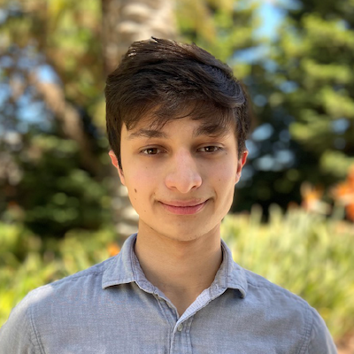
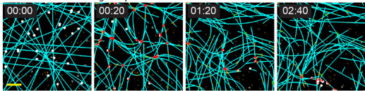
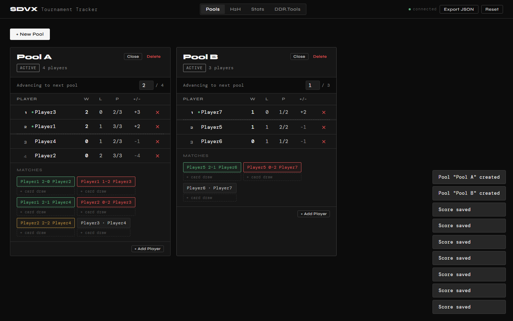

I'm a software engineer based in Sunnyvale, CA with a background in both computer science and molecular biology. I spend most of my time building backend systems and APIs to come up with optimal business solutions for complex problems where design decisions require strategic consideration for efficiency and effectiveness.
In my free time I enjoy exploring the outdoors, rock climbing, and organizing video game tournaments.
- Served as the primary technical point of contact for a high-visibility genomic reporting system redesign — drove architectural direction for my team's implementation, coordinated requirements across multiple upstream and downstream teams, and ensured cross-functional alignment throughout delivery.
- Had significant influence over the SQL database schema and C#/.NET REST API design, shaping shared data contracts and integration standards that enabled parallel development across dependent teams without creating hard blockers.
- Mentored teammates and resolved cross-functional technical blockers day-to-day, contributing to consistent code quality and on-time delivery under active stakeholder oversight.
- Owned a critical internal database and web tool end-to-end — resolved systemic data quality issues that virtually eliminated support tickets from downstream teams and restored cross-team confidence in the platform.
- Built a Python/SQLAlchemy backend for an internal data analysis web app with query logging and performance tracking, replacing a manual workflow with real-time operational insights.
- Delivered full-stack features across multiple tools using C#/.NET REST APIs and TypeScript/React, deployed to Linux via Azure DevOps CI/CD pipelines with Nginx and Gunicorn.
- Designed and built a modular Python application for automated integration testing of REST APIs and databases, automating 60% of the previously manual test suite and enabling reliable monthly QA cycles.
- Created Azure DevOps CI/CD pipelines and diagnostic dashboards to surface test results and failure data to engineering and operations teams, significantly reducing manual QA effort.
- Partnered with internal and external teams to onboard new services into QA infrastructure as the system evolved.
- Extended a C++ physics simulation engine (Cytosim) with novel microtubule breakage mechanics, modeling how multi-kinesin clusters impart mechanical stress on cytoskeletal filaments — contributing to a peer-reviewed publication in the Journal of Cell Biology.
- Automated large-scale simulation data processing pipelines using R and Slurm HPC cluster computing, substantially reducing experiment turnaround time for the lab.

Co-authored a peer-reviewed study on how KIF1C kinesin-3 motor clusters form liquid-liquid phase-separated condensates that entangle and break neighboring microtubules. Extended the Cytosim C++ simulation engine with new breakage mechanics. Combined with live-cell imaging, simulations established that microtubule rupture depends on motor processivity, cluster stiffness, cytoplasmic viscosity, and anchoring — yielding a rupture force estimate of 70–120 pN in cells.
↗ view publication
A self-hosted tournament management tool for running round-robin waterfall-format brackets in rhythm games. A FastAPI backend computes live standings, head-to-head results, and match scoring with JSON persistence; a React + TypeScript frontend (bundled with Vite) gives organizers a real-time dashboard that polls every 10 seconds so multiple operators stay in sync, plus an embedded chart-randomizer tool and one-click JSON export of full results. Built solo with AI-assisted development (Claude Code) for rapid iteration across both the backend and frontend.
↗ view on GitHubI'm open to new opportunities — whether that's a full-time role or just a conversation. Feel free to reach out.